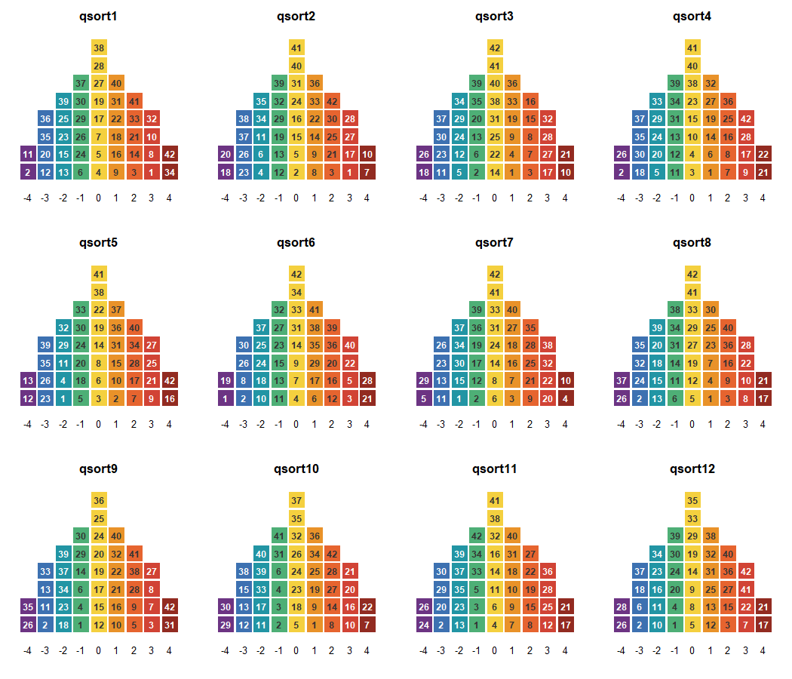
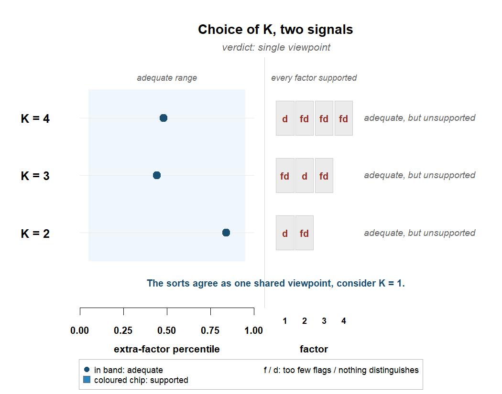
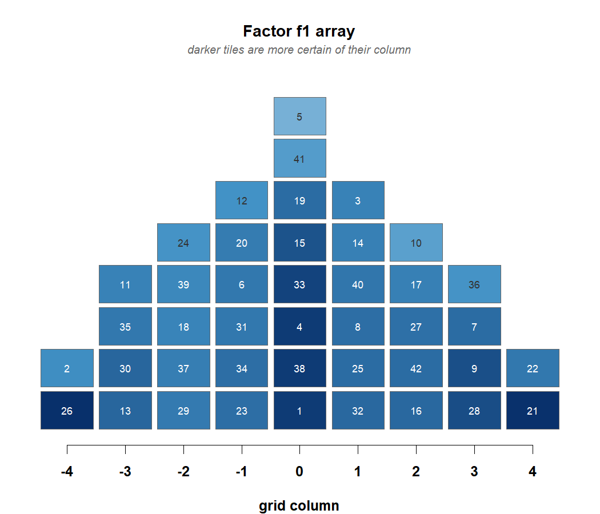
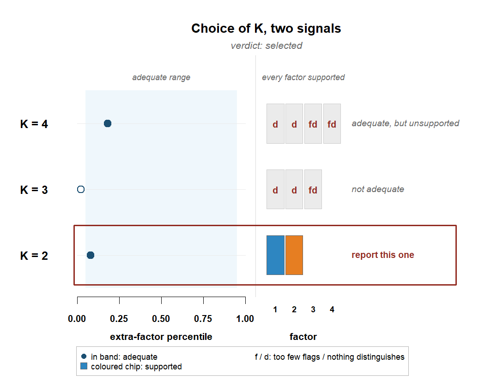
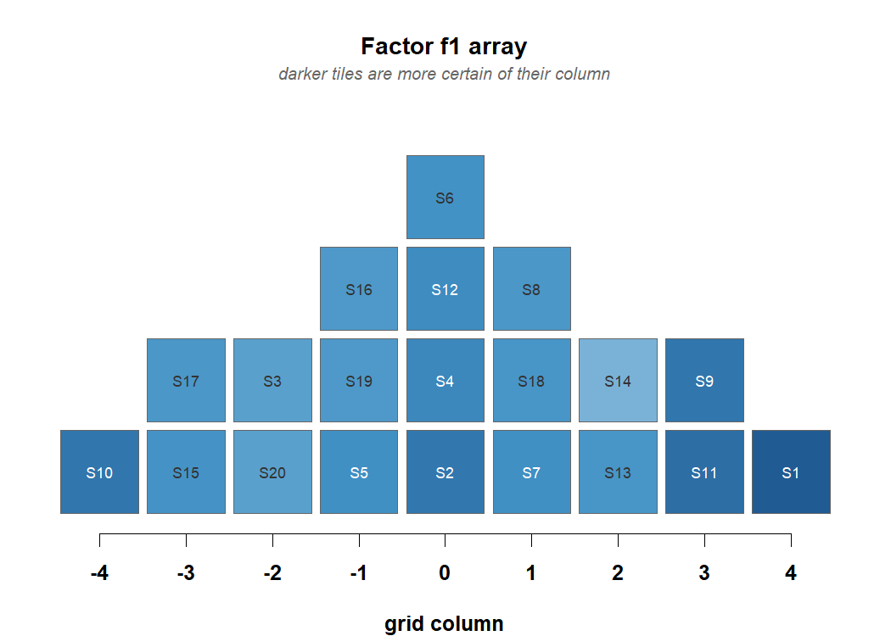
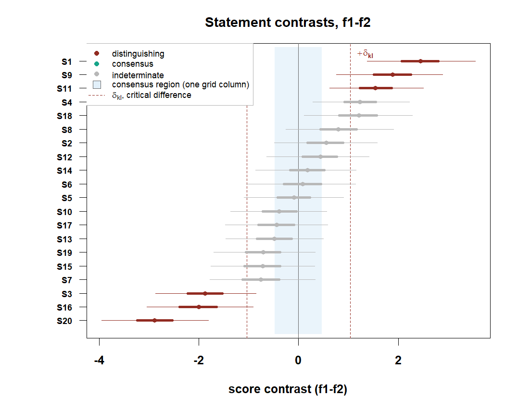

bayesqm turns forced Q sorts into the full set of Q-methodology reports, each carrying its posterior uncertainty. It reads the common study formats, PQMethod .DAT, Ken-Q, KADE, HTMLQ and FlashQ exports, CSV and Excel grids, and models the sort itself: each participant places every statement into a fixed grid, the quotas make that placement an ordered partition of the statement set, and the package computes the probability of the observed partition exactly. From one panel it derives what a Q study reports, bounded loadings, flags, factor arrays, statement scores, distinguishing and consensus statements, the number of factors, and the checks behind them. Every analysis returns an object that prints its own summary and draws its own plots.
Every decision states its rule. One posterior false-discovery rule selects everything the analysis reports, flags, distinguishing listings, consensus statements, and pairwise stars, and gives the expected number of false claims alongside. The number of factors is decided by two checks read together, whether K factors account for the panel and whether every factor earns its place. Quantities classical practice fixes by convention, above all the critical difference behind distinguishing statements, are estimated from the posterior instead, and the alignment of the posterior draws follows the MatchAlign procedure of Poworoznek et al. (2025). The implementation is checked two ways, against planted truth in simulation and against the qmethod reference implementation wherever both compute the same object, and those checks run live in the validation article on the package website.
You can usually see the answer before you compute it. Plot the sorts and each completed grid becomes its own pyramid, every statement on its tile, the color giving the column it was placed in. Two like-minded sorters put the same statements under the same colors, and a panel that shares one viewpoint repeats itself pyramid after pyramid. The numbers that follow put a figure to what the picture shows.
Installation
# install.packages("remotes")
remotes::install_github("rdazadda/bayesqm")CRAN still carries 0.1.0, an earlier model fitted through Stan. This version is a different model with its own sampler. Install from GitHub until 0.2.0 reaches CRAN.
A first analysis
One real panel ships with the package, the childhood obesity study of Akhtar-Danesh (2023), so this runs without any data of your own. 33 participants sorted 42 statements about childhood obesity onto a nine-column grid.
library(bayesqm)
obesity_sorts
#> Q-sort data
#> statements : 42 participants : 33
#> distribution: 2 4 5 6 8 6 5 4 2 (sum = 42 )
#> value range : [-4, 4]
#> source : excel:Childhood obesity dataset.xlsx
plot(obesity_sorts, participants = 1:12)
How many viewpoints does the panel hold? Fit two, three, and four factors and let two checks read each candidate. One asks whether K factors account for the shared structure. The other asks whether every factor earns its place, meaning at least two participants define it and at least one statement sets it apart from the rest.
sel <- select_k(fit_ladder(obesity_sorts, K_min = 2, K_max = 4,
seed = 11, quiet = TRUE))
plot_choice_k(sel)
The classical analysis of this panel reports three factors. Here every K accounts for the panel and no factor at any K is set apart by a single statement, so the rule refuses to select, and the verdict names what the sorts show. One shared viewpoint. The one-factor fit is then the panel’s report, and its array is the shared sort itself.
fit1 <- fit_bayesian(obesity_sorts, K = 1, seed = 11)
#> grid labels -4..4 recoded onto categories 1..9 (a monotone relabeling; the sorts are unchanged)
plot_factor_array(fit1)
Darker tiles are placements the posterior is more certain of. Each of these fits takes a minute or two.
When there are two viewpoints
Simulated sorts with two planted viewpoints, so the right answer is known and the multi-factor reports have something to find.
sim <- generate_data(N = 14, J = 20, K = 2, noise_sd = 0.6,
primary_range = c(0.65, 0.9), seed = 7)
qdata <- qsort_data(sim$Y, distribution = sim$distribution)
lad <- fit_ladder(qdata, K_min = 2, K_max = 4, seed = 7, quiet = TRUE)
plot_choice_k(select_k(lad))
Two factors pass both checks, boxed on their row. Fit that model. The sampler runs until a convergence check passes, and the printout reports it.
fit <- fit_bayesian(qdata, K = 2, seed = 7)
#> grid labels -4..4 recoded onto categories 1..9 (a monotone relabeling; the sorts are unchanged)
fit
#> bayesqm fit: exact partition (rank-order) likelihood, PX-Gibbs
#> 14 participants, 20 statements, 2 factors; grid 1-2-2-3-4-3-2-2-1
#> draws: 2000 kept (12000 iterations, burn 2000, thin 5)
#> gate: passed (max Rhat 1.003; min ESS 1255 bulk / 1606 tail)
#> alignment: pivot draw 332, mean congruence 0.89
#> tables: compute_loadings(), compute_flags(), compute_factor_array(),
#> compute_qdc(), claims()What gets reported is decided by one rule. claims() keeps the most probable flags, distinguishing statements, consensus statements, and pairwise stars, and stops adding claims when the expected share of false ones passes five percent.
claims(fit)
#> Selected claims at q = 0.05 (posterior expected FDR):
#> flags 9 participants selected (expected false 0.41)
#> distinguishing 11 listings selected (expected false 0.47)
#> consensus 0 statements selected (expected false 0.00)
#> stars 5 pairwise selected (expected false 0.17)Behind the counts sit the full tables, and two of the views show the result at a glance. The reported sort for each factor, on its own grid:
plot_factor_array(fit)
And statement by statement, where the two viewpoints separate and where they agree:
plot_contrasts(fit)
What the package covers
Import. read_qsort() reads CSV, Excel (HTMLQ, FlashQ, and tablet exports), PQMethod .DAT, Ken-Q JSON and Excel, KADE ZIP, and Easy-HTMLQ Firebase JSON. Grids labeled -4..+4, from zero, or with any distinct printed values work as they are, and the sorts are never altered. qsort_data() builds the object from a plain matrix, and plot() on it draws the pyramids.
The tables. compute_loadings() gives bounded loadings with credible intervals, compute_flags() flag probabilities with an explicit unclassified state, compute_factor_array() quota-exact arrays, compute_zscores() statement scores, and compute_qdc() distinguishing and consensus verdicts against a posterior critical difference and the one-grid-column region. factor_characteristics() is the per-factor block a results section quotes, and claims() selects what gets reported. rename_factors() relabels every table at once, and rotate_factors() and flip_factor() apply judgmental rotation to every draw.
The number of factors. fit_ladder() fits the candidate models, select_k() applies the two checks, and plot_choice_k() draws the whole decision. loo_ladder() adds PSIS-LOO as directional corroboration.
Checks. check_fit() runs the posterior-predictive checks, and check_persons() separates sorts the model spans from shared viewpoints it does not. Every fit passes a convergence check before it returns, and extend() continues a chain draw for draw.
Plots and draws. The 11 views share one style, from the raw sorts to the reported arrays, with ggplot2::autoplot() methods for loadings, flags, contrasts, and the array; bayesqm_set_colors() themes them and save_bayesqm_plot() writes the figures. as.matrix(), as.array(), and as.data.frame() return the draws under Stan-style names, and the posterior::as_draws_*() family is registered, so bayesplot and tidybayes read a fit directly.
Documentation
The package website is https://rdazadda.github.io/bayesqm/. vignette("bayesqm-intro") walks one analysis end to end, and vignette("output-codebook") defines every column of every reported table. The articles go deeper: the validation checks, the decision rules with a worked example of each verdict, and a start-to-finish walkthrough of the obesity panel. The reference index groups every function by task, and issues belong at https://github.com/rdazadda/bayesqm/issues.
Citation
citation("bayesqm") gives the reference. Report the version with packageVersion("bayesqm").
License
GPL (>= 3); see https://cran.r-project.org/web/licenses/GPL-3 for the full text.
bayesqm is developed and maintained at the Center for Alaska Native Health Research, University of Alaska Fairbanks.